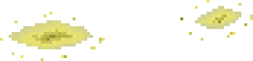
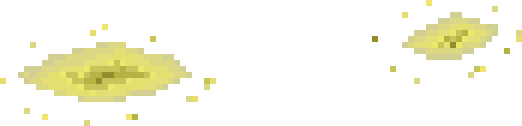

Pour nettoyer les tags, il faut une brosse dite "imbibée". Ce mélange se réalise en versant de la javel et du bicarbonate sur la brosse. Il suffira ensuite de brosser les tags. Noter que la brosse peut se nettoyer dans le seau ensuite.
La pelle sert à ramasser les cacas. Une fois ramassé avec la pelle, le caca doit être versé dans la poubelle.
Pour nettoyer la pisse, il faut utiliser une éponge imbibée de javel. La pisse au sol, tout comme les traces sales au sol, doivent être nettoyées avec un seau javelisé (donc de la javel doit y être versée). L'éponge également peut être rincée dans le seau.
La moisissure se nettoie en pulvérisant de la javel avec le pchit, puis en passant la brosse dessus. Si du produit est déposé sur la brosse (bicarbonate ou javel), on peut la nettoyer dans le seau. A noter qu'il faut utiliser la brosse WC (avec le manche) pour nettoyer la mousse en intérieur.
Du calcaire est présent dans la cuvette, sur le couvercle et le pied des WC. Pour le nettoyer, il faut pulvériser du vinaigre blanc, verser du bicarbonate et brosser. Attention : le bicarbonate ne peut être versé sur le couvercle ni le pied des WC (sans quoi il tomberait). Il est conseillé de verser le bicarbonate sur la brosse puis brossé après avoir pulvériser le vinaigre blanc bien sûr.
On peut mettre de la javel et du vinaigre blanc dans le pchit, mais celui-ci doit-être vide (ex : si le pchit est plein de javel, et qu'il faut mettre du vinaigre blanc, il faut vider le pchit dans le seau puis mettre le vinaigre blanc).
/!\ Attention bug éventuel : il faut nettoyer la pisse sur la cuvette avant de s'attaquer au nettoyage complet de la cuvette /!\